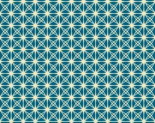

Nous présentons ici en images les réalisations produites au cours des différents unités d'enseignements que contient le module Programmation Créative:
Réalisations des étudiants: Alice Neussaint, Chloé Bailleul, Clementine Navarro, Joris Delapallière, Kevin Capoen, Laetitia Pira, Mariama Camara, Megane Demaret, Nadia Benmouffok, Noemie Vanelle, Pierre Normand, Adrien Lefebvre, Yoon-Ju Bae, Simon Lopes-Pereira, Mathilde Toussaint
Programmation Créative 1
Programmation Créative 1 est dédié à l'introduction de l'environnement Processing. Processing contient les fonctions essentielles à la programmation tout en étant simple d’utilisation. Les premières expérimentations débutent en contruisant un programme autour du dessin et de la composition visuelle. On aborde également le cas de l'image, comment la transformer en accédant directement aux valeurs de ses pixels.



Programmation Créative 2
Introduction aux bases de données
Introduction aux bases de données est dédié à l'apprentissage des notions de base de données. Soucieux de rendre l'enseignement le plus vivant possible et en connection avec une approche "humanités numériques", l'essentiel de l'évaluation passe par des projets de "journalisme de données" aucours desquels les étudiants ont l'occasion d'étudier un de leur sujet de prédilection sous l'angle de la recherche et de la manipulation de données
Travaux 2015/2016: voici un apperçu des travaux réalisés au cours du semestre Automne 2015